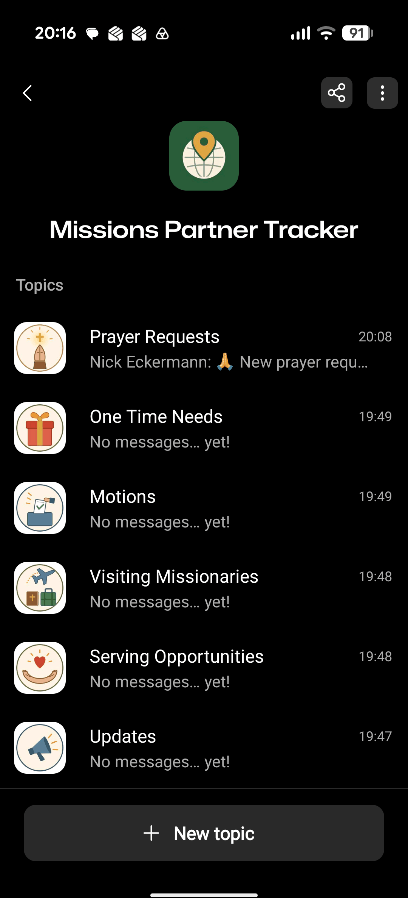
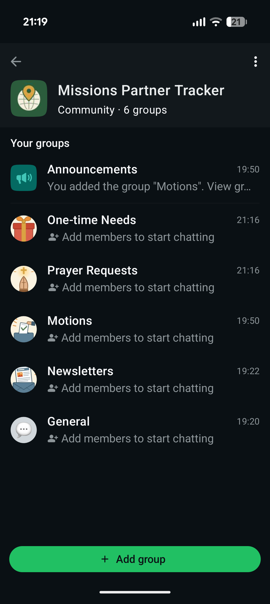

A prayer request, an answered prayer, a one-time need, or a newsletter is always recorded as a delivery candidate — no setting blocks that, with one exception below. Whatever gets recorded, GroupMe, WhatsApp, the admin digest, and the public prayer digest each ask the same three questions, in the same order, through the same function, before deciding whether to deliver it — whether that check runs on each channel's own schedule, or immediately because someone marked it urgent.
GroupMe and WhatsApp share a schedule because they're the same kind of channel — close to real-time chat — not because one depends on the other. They're two fully independent, separately connected features.
flowchart TD
PR["Prayer Request
Created / Answered"]
ND["One-Time Need
Created / Decided"]
NL["Newsletter
Created"]
RGATE{"About a restricted
partner, and that
church setting off?"}
NEVER["Never recorded --
the one exception"]
REC[("Event recorded")]
PR --> RGATE
ND --> RGATE
NL --> RGATE
RGATE -- yes --> NEVER
RGATE -- no --> REC
URGENT{"Marked urgent?
(isUrgent -- admin/editor
set at creation)"}
REC --> URGENT
URGENTNOW["sendUrgentDispatch() --
fires on every channel
right now, no waiting"]
SCHED["Each channel's own
schedule tick fires --
chat: shared daily hour.
email: cadence tier"]
URGENT -- yes --> URGENTNOW
URGENT -- no --> SCHED
GMSTART["GroupMe"]
WASTART["WhatsApp"]
ADSTART["Admin digest"]
PDSTART["Public digest"]
URGENTNOW --> GMSTART
URGENTNOW --> WASTART
URGENTNOW --> ADSTART
URGENTNOW --> PDSTART
SCHED --> GMSTART
SCHED --> WASTART
SCHED --> ADSTART
SCHED --> PDSTART
subgraph ELIG["isEligibleForChannel -- one function, same order, every channel, urgent or not"]
R1{"Partner restricted?
Allowed, and
already reviewed?"}
R2{"Chat channels only
(GroupMe/WhatsApp): this
content type turned on?
(admin digest: always
everything. public digest:
always prayer-only)"}
R3{"Someone eligible
right now? (urgent: any
recipient at all. scheduled:
only this tier/hour's
recipients)"}
NO["Not eligible"]
YES["Eligible -- deliver"]
R1 -- "restricted, and
blocked or unreviewed" --> NO
R1 -- "not restricted,
or cleared" --> R2
R2 -- no --> NO
R2 -- yes --> R3
R3 -- no --> NO
R3 -- yes --> YES
end
GMSTART --> ELIG
WASTART --> ELIG
ADSTART --> ELIG
PDSTART --> ELIG
SENT["Delivered on
that channel"]
SKIPPED["Skipped on
that channel"]
YES --> SENT
NO --> SKIPPED
CLEAR{"Every channel has
either delivered, or
permanently can't?"}
SENT --> CLEAR
SKIPPED --> CLEAR
DELETE["Row deleted"]
WAIT["Stays queued --
some channel's
answer could
still change"]
CLEAR -- yes --> DELETE
CLEAR -- no --> WAIT
URGENT and SCHED paths above feed the exact same eligibility check.
Same masthead, card style, and branding on both sides — the admin digest just has more to put inside it. For the same prayer request, one-time need, and newsletter, here's what each recipient's email actually contains: the admin digest includes everything, with a link back to the source; the public digest includes only the prayer request, and never a link anywhere a visitor couldn't already go.
GroupMe and WhatsApp post the same text, built the same way, on their own shared schedule — restricted-partner masking and all. Nothing WhatsApp-specific needed writing for how the message looks; it's the same rendering every channel already uses.
Each content type picks its own destination; WhatsApp also has an Announcements group every type can fall back to if its own group isn't set, so nothing is stuck with nowhere to go.


The full technical writeup — exact field names, file names, and every rule this diagram simplifies — lives in the project's spec.